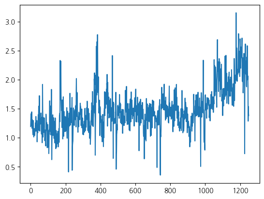

import numpy as np
import pandas as pd
from matplotlib.pyplot import subplots
import statsmodels.api as sm
from ISLP import load_data
from ISLP.models import (ModelSpec as MS,summarize)1. imports
from ISLP import confusion_table
from ISLP.models import contrast
from sklearn.discriminant_analysis import (LinearDiscriminantAnalysis as LDA, QuadraticDiscriminantAnalysis as QDA)
from sklearn.naive_bayes import GaussianNB
from sklearn.neighbors import KNeighborsClassifier
from sklearn.preprocessing import StandardScaler
from sklearn.model_selection import train_test_split
from sklearn.linear_model import LogisticRegression
import matplotlib.pyplot as plt2. Smarket Data 분석
- 불러오기
Smarket = load_data('Smarket')
Smarket
print(Smarket.columns)
import copy
Smar = copy.deepcopy(Smarket)Index(['Year', 'Lag1', 'Lag2', 'Lag3', 'Lag4', 'Lag5', 'Volume', 'Today',
'Direction'],
dtype='object')set(Smar.Direction){'Down', 'Up'}- Direction 을 인코딩(수치화) 후 상관행렬 계산
Smar['Direction'] = Smar['Direction'].map({'Up': 1, 'Down': 0})
print(Smar.corr()) Year Lag1 Lag2 Lag3 Lag4 Lag5 \
Year 1.000000 0.029700 0.030596 0.033195 0.035689 0.029788
Lag1 0.029700 1.000000 -0.026294 -0.010803 -0.002986 -0.005675
Lag2 0.030596 -0.026294 1.000000 -0.025897 -0.010854 -0.003558
Lag3 0.033195 -0.010803 -0.025897 1.000000 -0.024051 -0.018808
Lag4 0.035689 -0.002986 -0.010854 -0.024051 1.000000 -0.027084
Lag5 0.029788 -0.005675 -0.003558 -0.018808 -0.027084 1.000000
Volume 0.539006 0.040910 -0.043383 -0.041824 -0.048414 -0.022002
Today 0.030095 -0.026155 -0.010250 -0.002448 -0.006900 -0.034860
Direction 0.074608 -0.039757 -0.024081 0.006132 0.004215 0.005423
Volume Today Direction
Year 0.539006 0.030095 0.074608
Lag1 0.040910 -0.026155 -0.039757
Lag2 -0.043383 -0.010250 -0.024081
Lag3 -0.041824 -0.002448 0.006132
Lag4 -0.048414 -0.006900 0.004215
Lag5 -0.022002 -0.034860 0.005423
Volume 1.000000 0.014592 0.022951
Today 0.014592 1.000000 0.730563
Direction 0.022951 0.730563 1.000000 - 변수중 하나인 Volume을 시각화
plt.plot(Smar['Volume'])
plt.show()
- 반응변수와 Today, Year 변수를 제외
- MS : 데이터 전처리를 위한 함수
- 문자로 되어있는
Direction변수를 0,1로 변환 - 로지스틱 회귀분석 적용
allvars = Smarket .columns.drop(['Today', 'Direction', 'Year'])
design = MS(allvars)
X = design.fit_transform(Smarket)
y = Smarket.Direction == "Up"
print(y)
glm = sm.GLM(y, X, family=sm.families.Binomial())
results = glm.fit()
print(summarize(results))0 True
1 True
2 False
3 True
4 True
...
1245 True
1246 False
1247 True
1248 False
1249 False
Name: Direction, Length: 1250, dtype: bool
coef std err z P>|z|
intercept -0.1260 0.241 -0.523 0.601
Lag1 -0.0731 0.050 -1.457 0.145
Lag2 -0.0423 0.050 -0.845 0.398
Lag3 0.0111 0.050 0.222 0.824
Lag4 0.0094 0.050 0.187 0.851
Lag5 0.0103 0.050 0.208 0.835
Volume 0.1354 0.158 0.855 0.392- 예측된 확률
label을Down으로 채운 뒤 만약 예측된 확률 > 0.5 이면Up으로 예측(변경)- 훈련 데이터의 예측에 대한 혼동행렬 계산
- 예측정확도 계산
probs = results.predict()
print(probs[:10])
labels = np.array(['Down']*1250)
labels[probs>0.5] = "Up"
print(confusion_table(labels, Smarket.Direction))
np.mean(labels == Smarket.Direction)[0.50708413 0.48146788 0.48113883 0.51522236 0.51078116 0.50695646
0.49265087 0.50922916 0.51761353 0.48883778]
Truth Down Up
Predicted
Down 145 141
Up 457 5070.5216- 훈련 데이터를 2005년 전과 후로 쪼갬